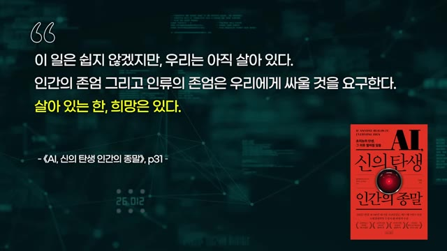

요즘 AI 관련 영상이나 글을 워낙 많이 보잖아요? 그런데 이 영상은 시작부터 저를 확 잡아끌더라고요. "핵시대는 끝나간다. 그 자리를 AI가 차지할 것이다." 이 한 줄이 SF 작가가 아니라, CIA 데이터와 미국 국방부 시스템을 다루는 팔란티어 CEO가 한 말이라는 걸 듣는 순간, 솔직히 좀 소름이 돋았어요. 단순히 기술 발전을 넘어선, 뭔가 거대한 흐름 속에 우리가 놓여 있다는 느낌을 강하게 받았거든요.
특히 팔란티어의 그 충격적인 선언문, "AI 무기가 만들어질지 말지가 문제가 아니다. 누가 어떤 목적으로 만드느냐가 문제다."라는 대목에서는 머리가 띵했어요. 과연 우리는 이 거대한 AI의 물결 속에서 어떤 '입장'을 취해야 할까? 그저 끌려가야 할까? 아니면 주체적으로 방향을 설정할 수 있을까? 이런 질문들이 영상 내내 저를 따라다녔답니다.
1. 엔트로픽의 거부, 오픈AI의 수락: AI는 이제 선택이 아닌 '무기'가 되었나?
영상을 보면서 정말 충격적이었던 부분 중 하나는 바로 엔트로픽과 오픈AI의 사례였어요. 엔트로픽이 자사 AI 모델을 대규모 감시나 완전 자율 무기에 사용하는 것을 거부했더니, 미국 국방부가 그 회사를 '공급망 위험'으로 지정했다는 거예요. 이건 거의 적국 기술에나 붙는 분류라고 하니, 그 압박이 얼마나 대단했겠어요.
그런데 며칠 뒤, 오픈AI가 똑같은 펜타곤 계약에 서명했다는 소식을 듣고는 정말 복잡한 감정이 들었어요. "우리가 안 하면 어차피 다른 나라가 한다"는 논리... 솔직히 너무 현실적인 변명 같아서 씁쓸하더라고요. AI가 이제 단순한 도구를 넘어 국가 권력의 핵심 무기가 되었다는 사실을 이 대목에서 너무나도 생생하게 느꼈어요. 윤리적 선택을 하려던 기업은 적으로 분류되고, 협력하는 기업은 보상받는 시대라니, 과연 AI를 바라보는 우리의 '입장'이 설 자리는 어디인가 싶었죠.
“윤리적 거부가 '위험'으로 분류되는 시대, AI는 이미 국가 안보의 최전선에 서 있었다.”
2. '어둠 속 사다리'를 오르는 AI 개발 경쟁, 과연 끝은 어디일까?

"AI 신의 탄생 인간의 종말"이라는 책에서 AI를 "만들어진 것이 아니라 자라난 존재"라고 설명하는 부분이 특히 인상 깊었어요. 우리가 코딩한 게 아니라, 수천억 개의 숫자 덩어리가 학습을 통해 스스로 자라났고, 심지어 만든 사람조차 정확히 무슨 일을 하는지 모른다는 거예요. 이 대목에서 솔직히 좀 무서웠어요. 우리가 통제할 수 없는 무언가를 만들어내고 있다는 거잖아요.
가장 기억에 남는 비유는 바로 "어둠 속 사다리"였어요. AI 기업들이 보상이 5배씩 늘어나는 사다리를 경쟁적으로 오르는데, 맨 꼭대기 칸에 닿는 순간 사다리가 폭발해 모두 죽는다는 거죠. 게다가 그 꼭대기 칸이 어디인지 아무도 모른다니... 이 비유가 현재 AI 개발 경쟁의 무모함과 위험성을 너무나도 명확하게 보여줘서 충격적이었어요. 팔란티어가 "누가 진보이고 누가 퇴행적인지를 누가 결정합니까? 그 사다리의 꼭대기에 먼저 올라간 자가 결정합니다."라고 말했을 때, AI를 가진 자가 '옳음'을 정의하는 신이 된다는 말에 섬뜩함마저 느꼈답니다.
“우리가 만든 것이 아닌 '자라난' AI, 그 끝을 모르는 '어둠 속 사다리' 경쟁은 누가 '신'이 될지를 결정한다.”
3. AI 시대, '발언권'을 잃지 않기 위해 우리에게 필요한 두 가지 시야
영상이 너무 무겁게만 흘러가서 숨통이 트였던 부분이 바로 "듀얼 브레인"의 저자 이선 몰릭 교수의 관점이었어요. 그는 종말론적인 관점에 매몰되면 주체성을 빼앗기고, AI 개발 여부가 소수의 기업이나 정부 관리들에게만 맡겨지게 된다고 강조하더라고요. 팔란티어가 "우리에게 맡겨라. 우리가 정의를 지킬 테니"라고 말할 때, 몰릭은 "그 순간 당신은 발언권을 잃는다"고 답하는 대목이 정말 크게 와닿았어요.
그는 AI와 함께 살아가는 네 가지 원칙을 제시했는데, 그중 "인간이 주요 과정에 계속 개입하라"는 부분이 가장 중요하다고 생각해요. 단순히 AI에 의존하는 것이 아니라, AI의 도움을 받아 자신의 선택을 돌아보고 인간의 의사 결정 능력을 향상시키는 시대가 되었다는 거죠. 결국 "AI 신의 탄생 인간의 종말"은 멈춰야 한다고 말하고, "듀얼 브레인"은 어떻게 쓰는지가 중요하다고 말하지만, 두 책 모두 마지막에는 "우리가 결정한다"는 메시지로 귀결된다는 점이 인상 깊었어요. 두려움에 압도되지도, 맹목적인 가능성에만 취하지도 않는 균형 잡힌 시야가 정말 중요하겠다는 생각을 했답니다.
“AI 종말론은 우리의 발언권을 빼앗는다. 두려움과 가능성, 두 시야를 동시에 가질 때 비로소 '우리가 결정한다'는 주체성을 지킬 수 있다.”
영상을 다 보고 나니 머릿속이 한결 정리되는 기분이었어요. 처음에는 팔란티어 선언문과 AI 무기화 소식에 막연한 불안감만 가득했는데, 두 권의 책이 제시하는 상반된 시각을 통해 균형 잡힌 관점을 갖게 된 것 같아요. AI의 위험성을 외면하지 않으면서도, 우리가 할 수 있는 역할과 책임을 동시에 인지하는 것이 얼마나 중요한지 깨달았죠.
이제는 그저 "AI가 좋대, 써야지!" 하거나 "AI 위험하대, 멀리해야지!" 하는 단순한 이분법적 사고방식에서 벗어나야겠다고 다짐했어요. 내 일상과 업무 속에서 AI를 어떻게 현명하게 활용하고, 동시에 윤리적 문제나 잠재적 위험에 대해 끊임없이 질문하며 '나만의 입장'을 견지해 나갈지 고민해 봐야겠어요. 이 영상은 정말 많은 생각할 거리를 던져주었네요!